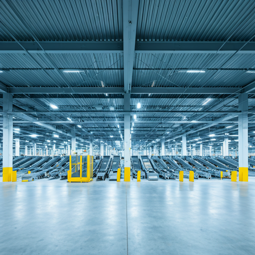

控制层
调度每一个
关键脉冲。
Sinoport OS 是全球贸易的数字神经系统。我们不只是追踪货物，而是以结构化确定性和精确规则调度每一个托盘与航班的移动。
四层系统架构
从上层规划到底层可信账本，以可追责为目标构建的结构化技术栈。
01
corporate_fare
企业资源层（ERP）
负责财务对账与高层库存规划。
02
hub
供应链可视层
承载全球里程碑跟踪与多式联运逻辑。
03
token
核心引擎
Sinoport OS
主动调度层，直接控制履约节点、自动化设备接入与任务派发。
04
encrypted
可信数据层
记录责任交接和签名留痕的不可篡改账本。
运营指挥
服务现代物流控制者的精准运营工具。
lan
节点可视化
统一查看网络中每一个实体节点的实时状态，包括分拣速度、温度条件和现场作业密度。
timer
SLA 监控
通过预测式风险分析，在 SLA 违约发生前识别问题并触发自动重排。
99.98%
准时准确率
优先级管理
在拥堵高峰时以动态排队逻辑自动提升高价值货物的处理优先级。
不可篡改的 POD 闭环
在交接时记录签名、高清图像和 GPS 信息，形成完整的签收闭环证据。
基础设施即代码
把网络能力接入你的产品。
Sinoport OS 采用 API First 设计理念，让你像调用云服务一样接入全球节点网络和物理事件接口。
- check_circle 用于实时状态变化的 Webhook
- check_circle 基于 JSON Schema 的订单接入
- check_circle 面向规模化的高吞吐限流能力
{
"order_id": "SP-992-01",
"destination_node": "SGP-CORE-01",
"priority": "EXPRESS_CRITICAL",
"items": [
{ "sku": "SR-90", "qty": 50 }
],
"constraints": {
"max_temp": 4.0,
"tilt_allowed": false
}
}
"order_id": "SP-992-01",
"destination_node": "SGP-CORE-01",
"priority": "EXPRESS_CRITICAL",
"items": [
{ "sku": "SR-90", "qty": 50 }
],
"constraints": {
"max_temp": 4.0,
"tilt_allowed": false
}
}
结构化责任体系
在全球物流中，错误不只是数据偏差，更是实体履约失败。Sinoport OS 为每一次流转建立清晰责任链。
fingerprint
身份核验交接
每一个实体触点都要求身份确认，把每个托盘和具体操作人绑定起来。
history_edu
可审计日志
输出符合审计要求的日志，精确记录货件状态变化及其毫秒级时间戳。

已验证
HASH: 0x9f22...8e11
“该货件已于 UTC 14:02 在阿姆斯特丹节点由可信数据层完成验证。”